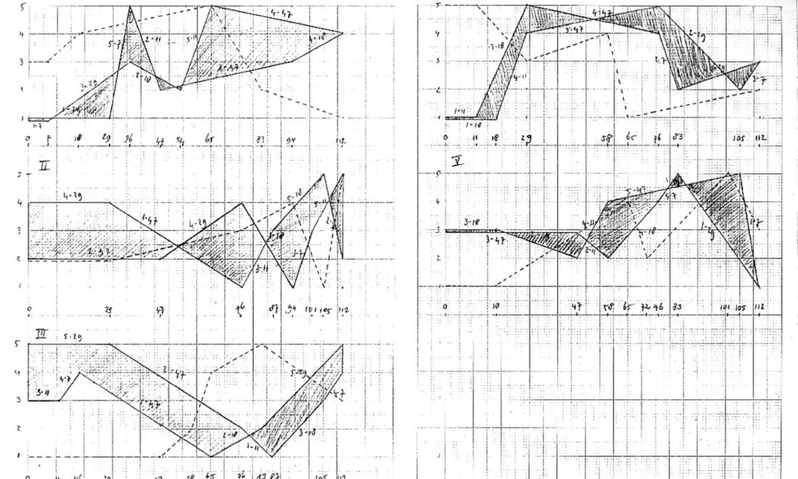

An algorithmic sequencer inspired by Autechre's Acroyear: patterns are not drawn note by note, they are generated and then bent.

Rhythmic and melodic pattern generation with swing control, multi-track song mode, and MIDI output over Web MIDI to any connected instrument.
The idea taken from Acroyear is that the material comes from rules rather than from the hand: you set a process running, listen, and work the parameters while it plays.